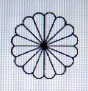
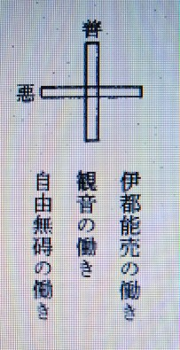
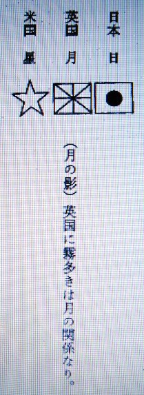

夜昼転換と国家の栄枯ついて １
明主様御教え 「三国同盟の意義」 （昭和18年10月23日発行）
「私は、世界の大転換なる人類史上空前の問題の真相を説くに当って、全世界重なる国々の宿命と、夜昼転換に際会しての変化即ち興るもの、滅ぶるものゝ帰趨（きすう）、即ち未来観をかくのである。
日本神道においては、天地は合せ鏡であるというのであるが、これは真理である。
即ち天体の構成は大地に反映し、勿論、天体の変化も大地に反映するのである。
この意味によって、私は検討してみるのである。即ち日本は太陽であり、英国は月であり、米国は星であり、
蘇聯（ソ連）は雲であり、独逸（ドイツ）は地であり、伊太利（イタリア）は海であり、仏蘭西（フランス）は霧である。
それらについて大略説明してみよう。
日本は説明の要はないが、英国が月であるという事はその国旗が物語っている。
即ち旗の地色は月明の空の色であり、赤色の条（すじ）が八方に通っているのは、太陽の光を反映して月光が八方へ伸びている形である。
そうして赤条の縁（ふち）に白条があるのは月自体の色を表わしているという訳で、倫敦（ロンドン）に霧が深いのも月の都であるからである。
そうして今日まで世界に覇を唱えていたのも、夜の世界は月が王者であるからである。
又米国の星条旗も面白いと思う。
この国の物質が豊富なのは星の数が無数であるという訳である。
又英国との関係も、月と星は夜の世界には共に光輝を放っているからである。
又天地創造説に月が分裂して星が出来たという事がある。
これも英国人が米国に移住し、それが開拓の根本となって今日のごとき大米国となったという訳である。
次に、蘇聯が雲であるという事はその国全体が雪が多いという事は水分が多いのであって常に陰欝である。
又雲の活動は断えず一定していないで、ある時は拡充し、ある時は縮小し、白雲となり黒雲となり、実に端倪（たんげい）すべからざるものがある。
蘇聯が東亜へ食指を動かすかとみればたちまちにして退陣し、バルカンやスカンディナビヤへ侵出するや
たちまち今日のごとく後退に後退をするの余儀なきに到るという状態は実に雲の性に相似ているのである。
次に、独逸（ドイツ）は地であるという事は、ナチスの言霊を解釈すれば能く判るのである。
又独逸国で最も多く用いられている色が褐色である事で、ナチスの服色もそうであり、全く土の色を表徴しているのである。
又、伊太利（イタリア）が海という事は、ファッショの黒シャツが表徴しているのである。
これは、現代人には受け入れ難い説明であるが、しかし簡単に説明すれば、海王は黒色の龍であるのである
（現代人は龍などというと荒唐無稽の説と思うので困るが、私はこの龍の存在を適確に知ったのであるが、それらを説明するには一小冊子にもなるから遺憾ながら省く事とする）。
次に、仏蘭西（フランス）の霧という事は、独逸の地と英国の月との中間にあって、夜の世界においては天地の間に霧が多いというーその型である。
故に今回仏蘭西が敗北したという事は、日の光に浴した独逸の為に、霧がはれたという訳である。
右によって、今次の世界大戦に当嵌（は）めてみる時一層明かになるのである。
日独伊の三国同盟は、日本即ち太陽が、大地である独逸と海である伊太利を照らす・・・即ち昼の世界の姿である。
独逸と伊太利が切っても切れない関係にあるのは陸と海の関係であり、ヒットラー氏は夫で、ムッソリーニ氏は妻であるからである。
右のごとく三国同盟が昼の世界そのものであるとすれば、月と星の英米は解消しなければならないはずである。
彼らが敗退に次ぐに敗退の運命を辿っているのは致方ないのである。
又蘇聯があの様に敗退したという事は、日と地との間を遮（さえぎ）っている雲が、はれんが為の地霊の活動即ち気圧の為にモスコーまで敗退したという訳である。
すべては天の時と大自然の運行によるのであって、人力のいかんともすベからざるものである。」 （「明日の医術 第３編」より）
明主様御教え 「大戦争と浄化作用」 （昭和18年10月23日発行）
「私は前篇において、病気も天文現象も浄化作用であるといったが、戦争なるものも、勿論浄化作用である。
昔からの歴史の推移に対し心を潜めて観る時、ソロモンの栄華も、希臘（ギリシャ）の文明も、
古都ソドムの崩壊もポンペイの埋没等も勿論その内面的に堆積せる罪穢が極度に達したからである。
又、今次の大戦は枢軸国と反枢軸国とが全世界を舞台として雌雄を決せんとする
実に人類史上空前の大事変である事は今更いうまでもないが、
かような大戦争が起ったという事は起るべき理由があって起ったのである。
しからば、その理由とは何ぞや、一言にしていえば、世界的大浄化作用である。
泰西文化が今日のごとく発達したというその内面には、何世紀もの罪穢が堆積し、それが極度に達したからである。
彼のアングロサクソンが、亜細亜を初め世界到るところの弱小民族を虐げ、
その富を強奪しては、自国のみの利益を計り、絢爛たる文化に酔っていた・・・
その罪悪に対し、いつかは清算の時が来なければならなかったのである。
即ち、外形的には豪壮華麗なる都市といえども、
霊的には限りなき醜悪の都市であり、崩壊の運命が迫っていたのである。
倫敦（ロンドン）の破壊もそれの表われであり、
いずれは紐育（ニューヨーク）の摩天楼といえども、
跡方（あとかた）もなくなる時が来ないと誰が言い得るであろう。
従って、彼が東亜から駆逐されてしまうという事は、
勿論わが皇国の大御稜威（おおみいづ）と、忠勇なる国民の為である事は言うまでもないが、
又彼等が犯しつゝあった多年の罪悪の年の明きが来たとも言えるであろう。
右の結果として、永い間虐げられつゝあった東亜諸民族が、
ここに八紘為宇の大御徳の庇護の下に皇道楽土たる日の近づきつつある事も自然の推移であり、来るべくして来り、成るべくして成るのである。
ちょうど、浄化作用によって毒素溜結が排除し、健全なる姿に還る事であって、人体の病気に対するそれと同様の意味である。
故に、浄化作用とは不正・不合理によって堆積せる汚穢が排泄されて、清く正しい本然の姿に還る事である。
又、世界を人体にたとえれば、日本は心臓で欧米は肺臓で、
亜細亜、濠州、阿弗利加（アフリカ）等は胃に相応するのである。
故に、この意味によって、祓戸（はらいど）の神の世界的大祓（おおはらい）が行われる結果、
心臓である日本の国力が強盛となり、
それによって肺臓である欧米各国が新生命を注入され、正しく躍動する事となるのである。
勿論それは日本固有の道義的文化によって、欧米人を覚醒させ、
ここに、自我的悪性でない・・・共存共栄的、善的文化が発展するのである。
又、胃に相応する原料資材の生産地は、大いに開発せられる事になるであろう。
人体と同じく、腎臓の活動によって心臓が健全となり、肺臓の活動となり、胃が強健になるという事と同様の意味である。
又面白い事には、心臓は左肺に包まれている。
これは、日独伊同盟の形であり、左肺に比し右肺が大きいのは、米英の意味にとれるのである。
従って、大戦争終了後は右肺である国家も心臓及び左肺と共同して、
恒久の平和を樹立し、人類永遠の平和を増進せしむるようになるのは必然であって、
ここに世界一丸即ち八紘為宇の大理念の実現となるのである。
即ち、人体にたとえれば心臓、肺臓、胃の臓が共に健全になり、
それによって、全身的機能の活動となり、理想的健康体となることと同様である。」 （「明日の医術 第３編」より）
明主様御講話 「日本は一番幸せになる」 （昭和16年9月11日）
「こういうことも考えなくてはならぬ。
世界は夜と昼とが交互に移ってゆくもので、これは一日の中に夜昼あると同じく、十年間、百年間、あるいは千年間にも夜昼はある。
いままでの歴史でも戦争と平和、景気、不景気というように、陰陽に来ている。
よく「景気は八十年ごとに来る」と言ったが、一年にも夜昼はある。
一日にもあるが、十年、百年、千年となると分からぬ。
霊界にも夜昼が移り変わってゆくのである。
今日世界のあらゆるものは大転換を始めていることも、時も分かる。歴史あって以来、今日のごとき大変わりしたことはない。
いままで、たいてい一国とか二国とか・・・
この前の大戦の時は転換はなかった。経済組織など変わらなかった。
今日のは恐ろしく変わった。これは非常なわけがある。
それは世界の何千年か何万年かに一遍ある昼間の世界が来た。
いままで非常に長い間夜だった。最初私は夜から昼になったことを知った。
昭和六年六月十五日初めて昼間になり始めた。故に今年は十年目になった。
夜が明けるのにもだんだんだんだんそうなるんで、日が明けるようになってゆく・・・六月十五日、岩戸開きに、天宇豆売命（あめのうずめのみこと）が踊って大いに笑った。
天照大神は笑い声を不思議に思われ戸を少し開けられたという。
それで手力男命（たぢからをのみこと）が戸を開けた。
そして天照大神のお出ましを願い、御手を引いて出た。
そして再び岩戸に入れぬよう七五三縄を張ったという。
これは昼間の世界になることで、太陽を人格化したのが天照大神で、お出になったのは今度がそうである。
翼賛会の発会で、これより岩戸開きの会議を舞い開いた。
私は昭和六年六月十五日に安房の日本寺へ行った。
その時天照大神がお出ましになった。
あそこは日本寺という、日の本の寺というわけです。
三月経って九月十八日満州事変が起ったが十八日の日に不思議な事が起った。
岩戸が開けると日本は日の本であるからお日様が表われ、世界を照らし出し、満州へ射し、満州は日本のものとなった。
その後六年で支那事変、今度また照らしてる。その他、タイ、仏印と国旗が翻るようになった。
国旗は太陽の光を小さく分割したものである、次にシベリア、次にフィリピン、蘭印よりインドと、日の丸がひらめくようになったというように、昼間になるのはどしどしそうなっている。
これは絶対でしかたない。
日本もいまになってみれば、海外発展など遅れている。
徳川の鎖国政策など惜しかったなどと言うが、このことが分かるとそうは言えぬ。
太陽が昇る時機でなかったのだからしかたない。
夜は月が上になり、太陽は蔭に入ってる。であるから、この時分いくらやっても海外へ発展することはできない。
故に徳川の鎖国政策は大自然の法則に従ったものである。
神は大宇宙の主たる神人で、人間を使っておられる。
霊界が明るくなると、浄化作用が起り、強くなる。
（これは新しい学問であるからよほど話しにくいが、呑み込むのも骨が折れる。が、呑み込んでおくとこの世の中の行き先が分かる）
大宇宙にあるいろいろなものは一つの国として表われている。
日本は日、米が星（旗の色も月夜の色である）赤い条は太陽の光を受けている。
黒いのは八方へ照らしてる。英は月、ドイツは土、イタリアは水、独伊の仲のいいのは大陸と海は切っても切れぬからである。ロシアは雲、フランスは霧。
今度の独ソ戦など、今年六月十五日、現界の岩戸が開け・・・
いままでドイツと日本が提携したのは、雲を除る必要があり、日本の太陽とドイツの土の間に雲があった。
これを払わなくてはならぬ。それで戦争が起ったのである。
スターリン、ヒトラーはいま雲を払う作用をしている。
故にドイツと日本は国境がくっつく。シベリアは日本、ヨーロッパとロシアはドイツになろう。
そして月も星もなくなり、結局いろんなことがあってもそこへ行く、絶対そうなる。
神様・・・大自然がやっている。
英米がどうしようと、必ずそうなる。そうして日本は一番幸せになる、太陽の国であるから。（中略）
しかし、それまでにはいろいろの苦しいことがあるが、それを知っていれば楽である。
そういうふうになるということは、太陽が表われると、霊界が明るくなる。」
明主様御講話 「夜昼転換の順序」 （昭和27年9月16日）
「今度アメリカから帰ってきた立松文二という人が、あっちの病気の統計をすっかり調べて帰ってきたのですが、この間も話した通り、すばらしく病気が多いのです。
で、このまま進んで行くとアメリカは亡びてしまいます。だからその原因や治し方やなにかをすっかり書いて、小冊子にして大統領とか偉い人、医学界とかに配ろうと思ってます。
で、アメリカを大いに救いたいと思ってます。これから書くのですが、「序文」だけ読ませます。
ところが日本では、アメリカの医学が世界で一番進歩しているというので、一所懸命まねをしようとしてますが、私の考えではおよそあべこべです。
日本の当局の方ではアメリカが先生になるが、私の方ではアメリカは弟子のように思っているから、逆になるわけです。
（御論文「米国に於ける驚くべき病者の氾濫」）
（寄書「米国に於ける病気状況」）
こういう統計ですから「栄光」に出します。後は見てください。今言った通りたいへんなものです。
それが年々増えているのですから、最後を考えると恐ろしいくらいなものです。
それを日本はまねしようとしているのですから、実に見てはいられないです。
それからこの間もちょっと話したが火素が増えることですが、おもしろいのは今年の温度ですが、
今日もそうですが、東京よりも強羅では二度高いです。
こっちが二十二度で東京が二十度かです。こんなことは今までにないのです。
たいてい東京よりも三度ないし五度低いのです。
今年は東京と同じか東京より高いのです。実に不思議です。
それだけ火素が増えたのです。それを書いてみたのです。
（御論文「昼の世界に転換の科学的証明」発表）
昼の世界になった一番初めは日蓮上人の時で、それまでの仏教は月の教えだったのです。
本地垂迹といって、本地とは日本のことです。
これはいつか書いた通り、仏教はお釈迦さんが「仏滅の世が来る、それからミロクの世になる」と言って、つまり月の教えは夜の教えです。
これは字でみるとおもしろいが、「月」という字は下を取ると「日」になるのです。
だから月の中に日が含まれているのです。
これはなかなか深い意味があるのです。
そういうわけで、仏教の中から日が生まれるわけです。
要するに夜の世界が昼の世界になるわけです。
その一番初めが日蓮上人です。
日蓮上人は妙法蓮華経と唱え、かつ日蓮上人自身は「天照大御神様の生まれ変わりだ」と、こう言っていたのです。
安房の清澄山で妙法蓮華経を最初に唱え始めて、それからいよいよ宣伝したということになってますが、
その時にもう日本は黎明期に入ったわけです。
黎明期に入ったといったところで、霊界のごく奥です。
つまり上の方です。最奥の霊界に日が現われたわけです。
それが明治になっていっそう、またその次の霊界に・・・霊界も一、二、三。神界、中幽界、現界と。
それがまた三つに分かれているのです。天国も第一、第二、第三となっている。
ですから第一天国に日が現われたのが日蓮上人の時です。
それから第二、第三とー第三あたりがちょうど明治というわけです。
それでおもしろいのは、日本が世界から認められた・・・今までは極東の隅に隠されていたが、
とにかく世界的に現われたのが、アメリカのぺリーが来てからですから、結局日本を生んだのがアメリカです。
ところがアメリカは星の国ですが、「星」というのは「日を生む」と書きます。
これも神秘なのです。
すると星が日を生むということですが、つまり月が隠れると今度は星の世界になるわけです。
だから月は英国です。
英国がおとろえてきて星の国米国が願ったのです。
星の国が興った時が闇の夜ですから、星が光るのです。
これは実に良く出ている。英国がおとろえるのと逆に米国が光る。
月が隠れるに従って星が光を増すという順序なのです。
それが良く国で現われている。
それで星が現われて、それから日が現われる・・・日本が生まれる。
こういうことになる。
日本がだんだん生まれていく順序は、今言ったとおり日蓮上人・・・六百数十年前ー六百五十年祭を数十年前にやりましたが、
それから明治になってまた明るくなって、それから私の本にある昭和六年六月十五日・・・
今読みましたが、あんな具合に今度は中有界が明るくなった。
それからいよいよ現界に日が出るわけです。
それはこれからです。そうすると現界が大変化してくる。
それがつまり最後の審判なのです。
それでいよいよ仏滅であり、今度は新しい文化が生まれるという順序なのです。
それについて最近多賀さんの妻君に対して、いろんな霊が憑っているのです。
仏界の・・・弘法大師が先に憑ったのですが、弘法大師だとか、役の行者だとか、臨済宗の開祖で臨済義玄とか、
法相宗の開祖は、この間も言った通り奈良仏教の開祖ですが、そんなような偉い人が憑ってきて
「いよいよ仏界が滅した。自分は今まで間違っていたから、明主様にお詫びしてもらいたい。
そうして今度メシヤ教の仕事に働かしてもらいたい」と言うのです。
これは本当なのです。まだいろいろ出てくるのですが、それによっても仏滅が良く現われている。
そんなわけで、非常に近寄ってきているのです。
近寄ってくるからして、これからもう少し経つとあらゆる面が変化してきます。
本当に変化するのは熱海の瑞雲郷ができあがって、それから現界的になる。
神仙郷はいつも言う通り霊界なのです。
それで神仙郷が完成したということは、霊界に地上天国ができたわけです。
今度熱海が完成すると現界にできるのですから、今度は汚いものが崩壊して、本当のミロクの世の建設が現界的に始まるわけです。
で、熱海が完成するのは、大体再来年でしょう。
すると、再来年を過ぎると、今度はすばらしい変化を起します。
それは非常に近寄っているのです。
これはいろいろ神秘なことがありますが、追々話していきます。
それで世界の中心というものは、先にも言う通り、この神山（かみやま）なのです。
これは日本の西と東の真ん中になる。
それから日本は世界の型になっているのです。
世界の型ということは、天国の型になっている。
ですから日本は世界の天国としての小さいものです。
日本は世界の公園ということを私は言いましたが、世界の公園が日本なのです。
それで日本の公園が箱根なのです。
すると東西文明の中心なのです。
箱根は東西の中心になり、さらにその箱根の中心が神山なのです。
で、神山の向こうが静岡県でこっちが神奈川県なのです。
神山の山の上に、なにか建てるわけにはいきませんから、その下の強羅が神山の型になるわけです。
それで私は「神山荘」と名前をつけたのです。
「日光殿」も最初は「早雲寮」とつけたのですが、神山と早雲山の型になる。
そうするとあの美術館は世界の真ん中の型になるわけです。
この神仙郷というのは中心になるから、ここが完成すれば霊界の天国ができたのです。
これが霊界で、これがだんだん拡がっていく・・・
体的に拡がっていくと、間違っているものや汚いものは自然になくなっていく。
だから破壊と建設が同時にできていくということは、そういうことです。
しかしこっちで破壊していくのではない。
間違っているものは自然にそうなるのです。
そうするとたいへんな現界的な変化になっていくわけです。それをボツボツ書いてます。」
明主様御講話 「夜昼転換により日本文化が世界的になる」 （昭和27年9月24日）
「それについてもう一つおもしろいのは、これは昨日の新聞に出てました。
読売か朝日か毎日に出てました。新聞に良く書いてありましたが、
英国が非常におとろえてきたのです。
英国が、財政からあらゆる点において、びっくりするほどおとろえてきたのです。
むしろ日本よりか悪いようです。
ですから英国をなんとかしなければならない。
他の世界の各国まで非常に影響すると書いてありましたが、これはあたりまえなのです。
なんとなれば英国はいつも言う通り月ですから、
月がだんだん西の海に沈むからして月の光というものはなくなって、
そこで英国がそういうふうになるに従って、
米国が世界的に非常に目立ってきたということは、月が蔭に隠れると、夜の世界では星しか見えません。
そこで今度は星の世界になるわけです。
今 米国が世界に覇をなしているのはそういうわけです。
今度は日が出てくると、日本文化がどうしても世界的になる。
そこで「星」という字は、「日を生む」と書くのです。
で、米国が日本を援助して・・・これは徳川末期からそうですが、
とにかく日本を援助して、世界に出したのが米国ですから、
今度もまた米国が日本を大いに援助して、だんだん昔の一等国のように復活するように米国がしてます。
日本も最近はだんだん良くなってきつつありますが、そういう大きな意味なのです。
ですから、どうしても昼間の世界になるという、
そういう形が世界的に・・・静かに見ればちゃんと良く分かるのです。
では、今日はこれくらいにしておきましょう。
大勢だから浄霊も少し時間をかけてやります。」
明主様御講話 「将来はヨーロッパではドイツが一番主になる」 （昭和28年2月17日）
「「アメリカを救う」の表紙ですが、この意味をよく聞かれます。
あなた方も聞かれるだろうと思いますから、この意味をちょっと話しておきます。
ちょうど時期が世界的に昼間の世界になって、つまり太陽がやっと昇り始めたわけです。
そこでアメリカは星ですから、星が光るのは闇の夜の間です。
それで闇の夜にまず太陽が出るという意味なのです。
霊的にはそういうわけです。
しかし体的に言うと、アメリカの国旗を上に画いて、下に日の丸を画くというと、
アメリカ人が見ても気持ちがいいでしょうから、そういう具合にしておいて、実は今言ったような意味があるのです。
それで英国はいつも言うとおり月です。
月がだんだん西の方にはいって行くと、月の光がなくなるから、今度は星が光ってくるのです。
そこで英国がおとろえてくるに従ってアメリカが世界的に輝くというわけなのです。
それで今度いよいよ日が出ることになると、今度は星の光はだんだん薄れてくるわけです。
それはこれからです。
そこでまずアメリカに太陽が出るというわけですから、それがだんだん具体的に現われてくるわけです。
それでソ連は、ロシアと言いますが、これは露です。
そこで太陽が出ようとする夜明けには露が一番多く大地に溜まるわけです。
しかし日が出ると露は乾いてしまいますから、いずれそういうことが世界的に現われてくるわけです。
それからフランスは霧なのです。
それからドイツは土になります。
ですから将来はヨーロッパではドイツが一番主になるわけです。
ヨーロッパを統一するわけです。
そういう使命になっているのです。
世界というのはそういうようにいろいろと、天文とか天然現象というものにすっかり出ているのです。
それで人間は星になるわけです。ですから人間が増えるに従って星の数も増えて行くのです。
星の数はまだまだ増えて行きます。ごく古い時代には星の数はずっと少なかったのです。
ですから、よく新星発見ということが言われてますが、新星というものはどんどん増えてきているのです。
それでうんと大きいのだけが発見されているわけですが、このことは前に書いたことがあります。
それで月火水木金土の星というのは各国の元首になるわけです。」
明主様御教え 「世界統一の中心」 （昭和10年7月25日発行）
「今まで吾々は、日本が世界を統一すると言い、又、それを信じて来ました。
なぜであるかと言いますと、日本は世界の中心であるという事であります。
所が、世界は日本を称して、極東の国と言っております。極東というと端っこと言う意味になります。
その端っこが世界の中心であるとは一寸変にとれるのであります。
それについて、この間観音様から知らして戴きました。
一寸した事ではありますが知っていていい事と思うのであります。
それは、天界の中心が日本の真上になっているのでありまして、東京の麹町宮城が、天の中心の中心になっているのであります。
で、こういう風に見、こういう風に考えてみると判ってくる。
例えばこれ（茶碗を取られて逆さになされ）ここ（茶碗の尻の丸い所）が日本と致しますとこちら（上から）見ると中心でありますが、
横から見ると端になる、極東になるのであります。
要するに、尖（とが）りの真中とみれば、宜しいのであります、詰まり縦から見るのと、横から見るのと違いであります。
又祭りの際の、五六七のお供餅でありますが、これを上からみると、一番上の赤が真中でありますが、これを横にみますと端っこになっています。
この道理で判ると思います。今度の観音会の徽章（きしょう）もこの五六七のお供えを真上から見た図であります。
所が、今までの世界の中心はどこかと言いますと、英吉利（イギリス）になっているんでありますが、これは天の中心と地の中心が外れているんであります。
それを稔（ね）じ直すそれが今度の大経綸であります。
今までは宗教でも何でも、西の方が中心になっているんでありますが本当は、東の方が中心にならなければ天地の法則に叶わないのであります。
あるいはアメリカに中心が移ったなどと言っていますが、東の方が、中心にならなければ、どうしても世界は平和にならないのであります。
要するに、横は合っているが、縦は違っているんでありますから大光明世界建設にはこの根本が直らなければならないのであります。」
明主様御教え 「神の経綸」 （昭和18年10月5日発行）
「そもそも宇宙とは何ぞや、それは無限大の空間の中に、太陽、月球、地球及び星辰が存在している事は誰も知るところである。
そうして吾々の住むこの地球こそ宇宙の中心であり、主である。
又日、月、星、辰は地球の為に存在し、地球は日月星辰によって存在するのである。
故に、その経綸を行わせ給わんが為に、神の代行者として人間なるものが造られてあるのであり又万物は人間の為に造られたのである事は言うまでもない。
従って、人間の使命たるや、実に重且（か）つ大であって、神の理想をこの地上に顕現せんが為に生れさせられたのであるから、それを自覚する事によって、真の人間たり得るのである。
この意味において、人間は自己本位の我欲に囚われたり、国家社会の進運にいささかなりとも背馳（はいち）するような事なく、惟神、神定め給える大君を現人神と崇め奉り、忠孝を本とし安逸（あんいつ）を卑しみ、各々の職域に奮励努力すべきであって、ここに到って始めて人間たる本分に適（かな）うのである。
特に日本人は世界に冠たる皇国の民であり、神の選民である事を自覚しなければならないのである。
そうして、主神の深甚なる御目的や、その御経綸は、到底人間の想像だも及び得べからざる事は固よりであるが、
ただ御経綸の上において、神はその時代時代に必要なる人間を顕わしそれぞれの使命を遂行させ給う事は吾々といえども想像し得らるるのである。
勿論、英雄も偉人も聖賢もそれであり、又、戦争も平和もその為であり、かくしてこの地上は一歩一歩無限の進展を遂げつつあるのでその実相は、誰もが眼にも映るのである。
故に、いつ果つべくもなくみゆる大戦争や、大禍乱大天災も、その渦中にある間は暗澹（あんたん）たるものであるが、時過ぎ時来れば、又平和の光は射し初め、泰平を謳歌（おうか）するというようになるのであって、実に変転極まりないのが世界の姿である。
そうして古来からの歴史の推移を、心を潜めて冷静に観る時そこには一貫したしかも厳然たる・・・神の摂理と御目的が、朧気（おぼろげ）ながらも窺（うかが）い知らるるのである。
以上の意味によって、私は数年前、日本が世界を統一すると共に、東西文化を融合して成った新しい文化が日本から生れて、逆に世界へ拡充する事を予言した事があるが、今やそれが着々実現の時となって、最早何人といえども、明かに知り得る状態になったのである。
今戦いつつある大東亜の戦争も、支那事変も三国同盟も、五、五、三の華府（ワシントン）会議も、連盟脱退も、第一次欧州大戦も、日清戦争も日露戦争も明治維新も、その準備であった事が肯かるるであろう。
又、畏くも、遠きは神武天皇の八紘為宇（はっこういう）の大神勅も、今日の為に発せられ給うた一大予言と拝察せらるるのである。
そうして、支那事変によって数年を費した事が、大東亜戦争に対する周到なる準備工作の為であり、南洋一帯の資源を米、英、蘭が二、三世紀にわたって開発した事もそれであり、
大東亜戦争に全力を挙げて、後顧（こうこ）の憂なく戦い得るという事は、ソ連との中立条約の為と、盟邦独逸（ドイツ）が蘇聯をあれほどに打撃を与えたからでもあろうし、
五、五、三の比率によって、日本の海軍が猛訓練を行わざるを得なくなって、それが今日、赫々（かくかく）たる戦果を挙げ得る動機となった事等も、実に深甚なる神意でなくて何であろう。
全くあれを思いこれを億（おも）う時、日本をして世界の盟主たらしむべく、数千年前より神が深遠なる御経綸を行わせ給いつつあった事を拝察さるるのである。
実に一切は神の御意志によって動き、歴史とは神の経綸の道程（みちのり）にしか過ぎない事と思うのである。」 （「明日の医術 第２編」より）
明主様御講義 「善悪のムスビ」 （昭和10年7月25日発行）

「稜威（いつ）八紘に輝く、これは善悪二つを結び、日本を中心にあらゆる力が出た時八紘に輝くのである。
今は天皇の稜威は現われていないが、今後において日本が西洋を結んで初めて御稜威（みいつ）が八紘に輝くのである。
霊体 ムスビ 日本（今後出来る）

日本人は純金であるが、今の日本人は鍍金位が多い。朝鮮、支那は九金かそこらのものである。
日 黄色人 金
月 白色人 銀
土 黒色人 鉄－鋼 （土人と書くは面白い）

英国に霧多きは月の関係なり。
今までは夜であるから月と星（英米）とが主になって来たのであったが、いよいよ日が出て夜が明けたのである。
素盞嗚尊は黄泉の国へ行ったとあるが、それは黄泉の国（常世）夜の世界、夜見の国、月星（英米）が威張っていたのも夜の世界であった為である。
日がいよく中天に昇った時は月も星も影をひそめて終うのである。
この時こそ大光明世界なのであります。
これに反し仏教の方の説き方は非常に違う。余りに安直なる説き方である。」 （「観音講座 第二講座」より）